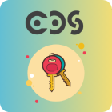

Restrict menus, models and fields per user from a single screen.
Odoo 19.0.1.1.0 Odoo 19.0 Community License: LGPL-3 CPSS
Technical name: cpss_access_management · Depends on: base, web
Centralises in one application everything a functional administrator needs to restrict what a user may see and do, without writing a line of XML or Python: hide menus, forbid create / edit / delete / duplicate / export / archive on a model, hide the action and print menus, turn any field invisible, read-only, required or link-less, hide buttons, notebook tabs, the chatter, the filters and the group by entries, forbid a given report, and narrow the records a user may reach with a dynamic domain.
Table of contents
Access rights in Odoo are designed around groups. As soon as two users must share a group but not the same screens, the standard answer is a technical group, a record rule and an inherited view — three artefacts to write, to version and to maintain. This module replaces them with a configuration screen.
| Profile tab | Model | Effect |
|---|---|---|
| Menus | cpss.access.menu.rule | Hides a menu, and by default its whole sub-tree. |
| Models | cpss.access.model.rule | Forbids create, edit, delete, duplicate, export, archive, the action menu and printing; also hides the chatter, the filters and the group by entries of that model. |
| Fields | cpss.access.field.rule | Makes a field invisible, readonly, required, or removes the external link (no_open). |
| Buttons & Tabs | cpss.access.button.rule | Hides a button, a notebook page or a named link. |
| Reports | cpss.access.report.rule | Forbids one precise report (a whole model is handled through Forbid Print). |
| Domains | cpss.access.domain.rule | Narrows the records a user may reach, per mode (read / write / create / unlink). |
| Users | — | Assigns the profile to the relevant users. |
The Hide Chatter Everywhere checkbox, on the profile as well as on the user, hides the chatter on every model at once.
create / edit / delete / duplicate / export_xlsx attributes, attributes injected on fields), and the ORM raises an AccessError (check_access, write, copy, export_data). Hiding a button is not security: only the second layer blocks a direct RPC call.cpss.access.resolver._get_restrictions is decorated with tools.ormcache('uid'): every view load and every access check is a dictionary lookup. Any write on a profile, a rule or a user calls registry.clear_cache(), so a change is live on the next request, without restarting._has_any_restriction() answers in a single query, cached for the whole registry.base.group_erp_manager) and members of the Access Manager group are never restricted, whatever the configuration. Nobody can lock themselves out.ir.ui.menu.load_menus, _visible_menu_ids and ir.actions.actions.get_bindings are cached by Odoo on the user's set of groups. The module therefore filters around those methods, never inside them — otherwise two users sharing the same groups would share the same menus.A Button rule carries the name of the button, that is
the method it calls — exactly what the web client posts to
/web/dataset/call_button. The controller is overridden to refuse
the call: hiding the button and blocking the method are the same rule. Notebook
pages and links have no server-side counterpart: they are containers, and what
they contain is protected by the field and model rules.
ir.rule recordsIn Odoo, record rules coming from different groups are combined with
OR: adding a rule through a technical group would
widen what the user sees, the exact opposite of the goal. The module
overrides ir.rule._compute_domain (cached per user) and combines
its domain with AND on top of the native result. It is the only
way to express “on top of everything else, this user sees less”.
| Group | Rights |
|---|---|
cpss_access_management.group_access_manager(Access Manager) | Configures the profiles and the per-user restrictions. Is never restricted itself. Automatically implied by base.group_system. |
Standard installation, no external Python dependency and no configuration file to touch.
odoo-bin -d mydb -i cpss_access_management
Dependencies: base, web. The module has no demo
data, so it behaves identically on a demo database and on a production one.
get_view() and never in _get_view(), whose result is shared between users by the view cache.base, therefore every model: each entry point starts with a cache read and returns immediately when the user carries no restriction, which is the case for the vast majority of requests.Hiding the Add Custom Filter button (and its group-by counterpart) has no server-side extension point: it would require a JavaScript patch of the search component. This is deliberately not done — a patch that cannot be tested in depth on that component would break the search bar for every model.
The predefined filters and group-bys of a model are
removed from the arch server side, and the domain rules remain the
real protection: a custom filter never reveals a record excluded by a
domain.
The automated test suite lives in the tests/ folder. It is
never loaded in production: Odoo only imports that package when
the server runs with --test-enable or --test-tags, and
the tests are neither listed in the manifest nor imported by the module. There
is nothing to remove before going live.
test_access_management.py — per-user resolution, profile / user merge, menus, models, fields, and enforcement on both layers.test_access_advanced.py — buttons through the real /web/dataset/call_button route, notebook pages, chatter, filters, reports and record domains.This module is published and maintained by CPSS.
Before reporting a problem, please check the module version against the one installed on your database (Apps > the module > technical information) and reproduce the issue on a database without customisation.
Report bugs, ask for an evolution or request an installation through www.cpss-dz.com. Do not contact the contributors directly about support or help with technical issues.
Shipped translated into French (fr.po) and
Arabic (ar.po): labels, help texts, buttons, menus,
filters, wizards, error messages and PDF reports.
This module is maintained by CPSS for Odoo 19.0 Community. It is designed to be installed on a standard Odoo database, without any modification of the Odoo source code.